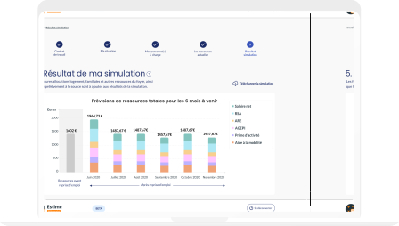

<section id="section-description">
    <div class="container-fluid">
        <div class="row">
            <div *ngIf="!screenService.isExtraSmallScreen()" id="img-description" class="col-md-5 col-sm-12">
                
            </div>
            <div id="text-description" class="col-md-7 col-sm-12">
                <h1 id="titre-text-description" class="headline-2-typo">
                    Un simulateur pour calculer
                    vos aides en cas de reprise d’emploi
                </h1>
                <p class="intro-typo body-text-description">
                    Visualisez l'ensemble de votre budget sur les 6 prochains mois.
                </p>
                <p class="intro-typo body-text-description">
                    Vous pourrez connaitre les aides auxquelles vous avez droit selon votre situation personnelle.
                </p>
                <p class="intro-typo body-text-description">
                    ex : aide à la mobilité, prime d’activité, aide à la garde d’enfant…
                </p>
            </div>
            <div *ngIf="screenService.isExtraSmallScreen()" id="img-description-small-screen"
                class="col-md-5 col-sm-12">
                
            </div>
        </div>
    </div>
</section>